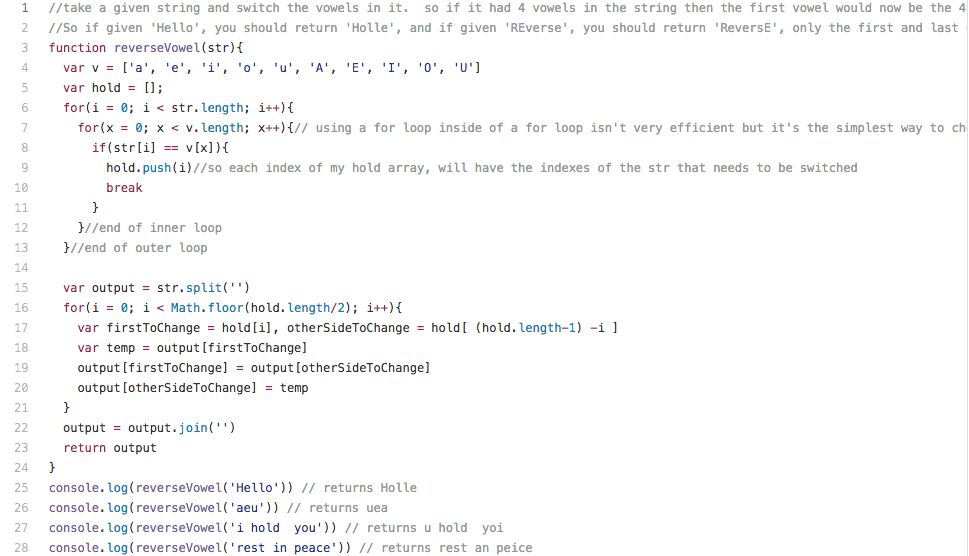

<div class="">
  <h2 class="shadow"><a href="https://github.com/jerrodq2/Algorithms/blob/master/strings/reverse_vowle.js">See Full Code</a></h2>
  <h3 class="shadow">Reverse Vowel</h3>
  <h4 class="shadow">Given a string, return that same string with all the vowels reversed, first with last, second with second to last, ect.</h4>
  <hr>
  <div>
  
  </div>
</div>
